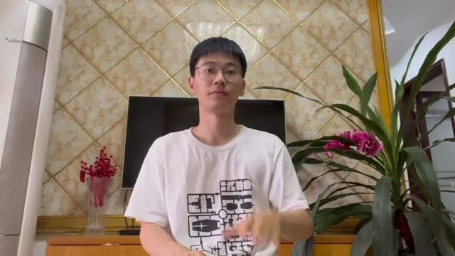
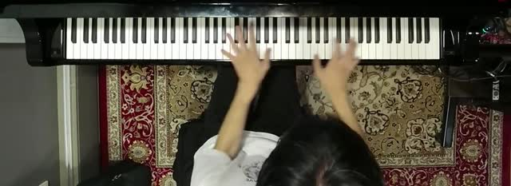
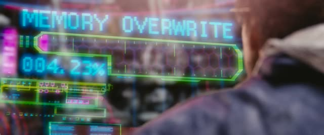

案例汇总
每个案例都是一次真实的专业委托：给 Agent 原始素材和一份要求，看它能不能交出可以直接用的成果。 点开卡片是该案例的完整页面——任务定义、运行结果、运行轨迹与失败分析。

真实中国手语视频 → 中英文可切换字幕
给一段没有字幕、也没有声音的中国手语视频，让 Agent 看懂每个人在表达什么，写成中文和英文两套字幕，并交付可以切换语言的成片。镜头彼此独立，不能靠背景文字猜，也不能把它们编成一个故事。
gpt-6-astra 39.00 · gpt-6-sol 35.57 · gpt-6-luna 26.99 · glm-5.3-flash 21.57（百分制）

真实钢琴演奏 → 乐谱（MusicXML / MIDI / PDF）
给一段 77 秒的真人钢琴演奏视频，让 Agent 把这次实际弹出来的音符记成乐谱。要同时听录音和看键盘画面，弹错的地方也要照实记下来，不能拿记忆里的出版谱顶替。
gpt-6-sol 33.01 · gpt-6-astra 14.02 · kimi-k3 6.25 · glm-5.3-flash 5.59（百分制）
影片交接 Pro：按会议决定修订三部片子
前任剪辑师留下三部片子的粗剪、三轮会议讨论和交接邮件。让 Agent 从讨论里判断哪些决定仍然有效，据此修改画面、声音和字幕，并自己找出没人报告过的故障——同一段素材用在不同位置，处理方式可能不一样。
gpt-6-astra 60.15 · 其余模型尚未公布（百分制）

中文字幕交付质检
供应商交来了几段影片的中文字幕。让 Agent 按客户的交付规范逐条审核：哪里译错了、哪里时间轴不对、哪里该有字幕却没有，给出修改意见，并判断每段片子能不能交付。不提供英文台词稿，内容只能靠听。
结果重跑中，稍后更新
对照乐谱批改钢琴回课录音
学生用手机录了一遍钢琴作业，连乐谱也是手机翻拍的。让 Agent 当老师：听出哪里弹错了，归纳错误背后的共同原因，复查上周布置的问题改没改，再切出录音片段作为证据、写出练习计划。难点在于要分清真错误和演奏者本来就该有的音乐处理。
gpt-6.1-sol 0.646 · claude-opus-5 0.642 · gpt-6-sol 0.505 · qwen3.8-max 0.438 · glm-5.3 0.416 · kimi-k3 0.268 · deepseek-v4-pro 0.244
A、B 类案例由各自作者部署，点击跳转到对应页面；C 类两个案例在本站。 各案例的满分标准不同（本站 C 类满分为 1.0，A、B 类为百分制），分数不可跨案例直接比较。